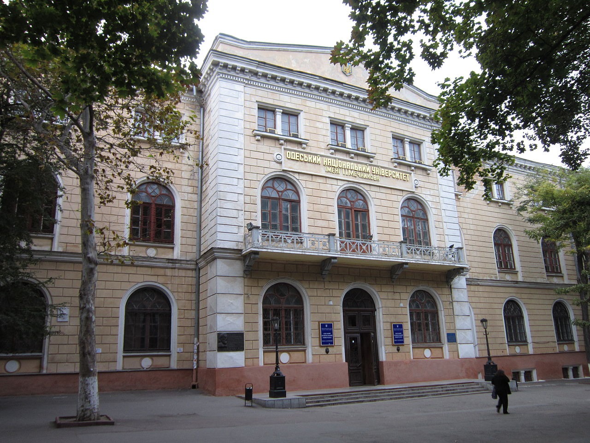

Оде́сский национа́льный университе́т (ОНУ) имени И. И. Ме́чникова (укр. Одеський національний університет імені І.І. Мечникова), с 1865 г. по 1917 г. — Императорский Новороссийский университет; с 1917 г. по 1920 г. — Новороссийский университет; с 1933 г. по 2000 г. — Одесский государственный университет (ОГУ); с 1945 года носит имя Нобелевского лауреата И. И. Мечникова, — старейший вуз на юге Украины. Он является одним из старейших университетов Украины и вместе с Киевским, Харьковским и Львовским университетами, фактически, определяет состояние и перспективы развития образования, науки и культуры в образовательной сети Украины
